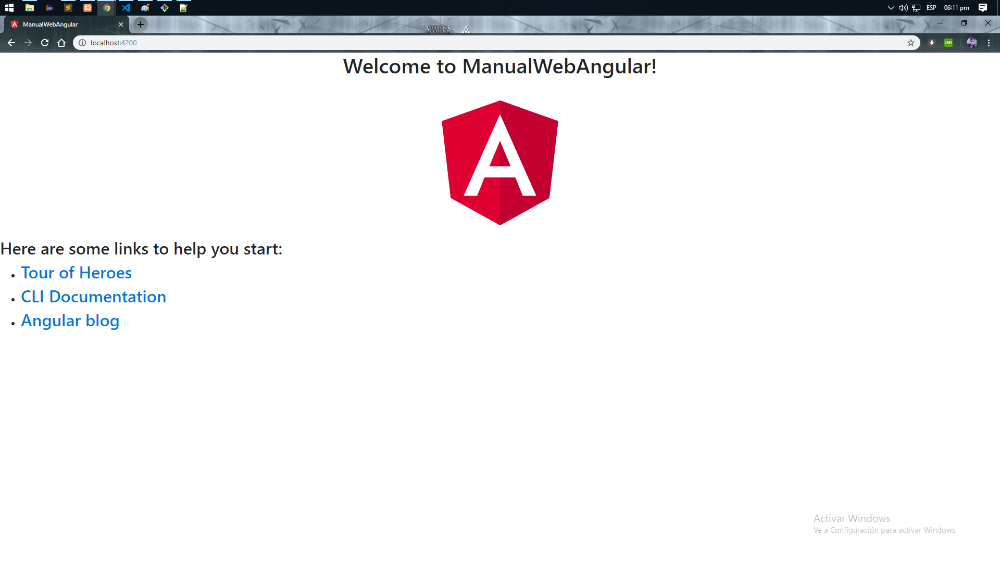

-
Instalacion de Visual Studio Code
Este programa será el IDE con que vamos a trabajar.
Entras a la pagina y lo descargas: https://code.visualstudio.com/ theme: Monaki (Opcional)Vamos a requerir también de Eclipse JEE con Wildfly instalado asi como viene en el primer tutorial: Requerimientos, Wildfly
Una vez descargado e instalado Visual Studio Code al abrirlo tendremos esta interfaz
-
Instalacion de NodeJs
Vamos a requerir de NodeJs para trabajar con PrimeNG for Angular
Entras a la pagina y lo descargas: https://nodejs.org/es/Una vez descargado e instalado NodeJs lo siguiente es probar que funciona abriendo la terminal o el CMD y ejecutar este comando: node --version
Windows: + R: CMD
Linux: Ctrl + Alt + T
En mi caso estoy usando la terminal de github, la terminal deberá responder con la versión instalada de NodeJs
Ahora vamos a crear un nuevo proyecto ejecutando este comando en la terminal: ng new ManualWebAngular
Cuando se ejecute se descargaran los paquetes necesarios para trabajar con Angular (tardará un tiempo).
Con la terminal entramos al proyecto y ejecutamos estos comandos para trabajar con PrimeNG
Para entrar: cd ManualWebAngular
$ npm install primeng --save

$ npm install primeicons --save
$ npm install @angular/animations --save

$ npm install @angular/cdk --save
Instalamos estos tres frameworks de la misma manera
$ npm install bootstrap --save
$ npm install jquery@1.9.1 --save
$ npm install popper.js --saveAbrimos el proyecto con Visual Studio Code
File → Open Folder...
Los paquetes ya fueron instalados en nuestro proyecto, ahora solo nos falta hacer que el programa los lea. Abrimos el archivo angular.json, buscamos el nodo styles y copiamos los estilos:
"node_modules/primeicons/primeicons.css", "node_modules/primeng/resources/themes/nova-light/theme.css", "node_modules/primeng/resources/primeng.min.css", "node_modules/bootstrap/dist/css/bootstrap.min.css", "src/styles.css"Hacemos lo mismo con el nodo scrips
"node_modules/jquery/jquery.min.js", "node_modules/popper.js/dist/popper.min.js", "node_modules/bootstrap/dist/js/bootstrap.min.js"
Guardamos y cerramos
Entramo a la carpeta src/app y abrimos el archivo app.module.ts
Este TypeScript seria nuestra clase principal donde vamos a hacer todas las importaciones de la carpeta node_modules para trabajarImportamos estas clases
import {BrowserAnimationsModule} from '@angular/platform-browser/animations';
import { FormsModule } from '@angular/forms';
import {AccordionModule} from 'primeng/accordion';
import {MenuItem} from 'primeng/api';
Si no la importamos podría darnos error cuando queramos trabajar con PrimeNGDentro de Visual Studio Code
Terminal → New TerminalAl abrir la terminal ejecutamos este comando npm start para compilar y ejecutar nuestro proyecto.
Puede tardar un tiempo.
Abrimos el navegador y comprobamos que se ha creado nuestra página web: http://localhost:4200/
Ya tenemos lista nuestra primera parte de este proyecto
Empezemos a programar abriendo src/app/app.component.html
Este HTML es nuestra primera ruta que enlaza nuestro proyecto del src/index.html con la etiqueta <app-root></app-root> y lo declaramos en src/app.component.ts. Una manera de verlo es que los .html serian nuestros diseño y .ts nuestra claseYa que estamos aquí en el index, le agregamos la clase bg-dark2 a la etiqueta body: <body class='bg-dark2'>
Ubicados en src/app.component.ts
@Component enlaza nuestro app.component.html y su css para trabajar con angular en su propia clase que en este caso se llama AppComponent
Abrimos app.component.html y borramos el código que viene porque vamos a escribir código nuevo
Agregamos nuestra primera etiqueta: nav
<nav class="navbar navbar-dark" style="background: rgba(0,0,0,0.8);padding: 0 1rem;"> <a class="navbar-brand" href="#"> <img style="float:left;margin-right: 10px;" src="matcocat.png" width="60%" class="d-inline-block align-top" alt=""> </a> <div style="float:right"> <p style="margin-top:10px;color: #FFCC00 !important;font-size: 25px;"> Capacitación </p> </div> </nav>Resultado:
Vamos a agregar la imagen y los estilos que nos faltan
Esta es la imagen matcocat.png descarga y guarda en la carpeta src
Tranquilo vaquero, solo falta importarla
Abrimos el archivo angular.json, buscamos el nodo assets y lo agregamos
"src/matcocat.png"Reinicia el servidor y debería mostrarse la imagen
Ahora copiamos los estilos que se muestran abajo, en el archivo src/styles.css
styles.css
footer{ background: #fff; padding: 1rem; border-radius: 2px; text-align: center; font-size: 10px !important; } .container-fluid { width: 99%; } #altaAlumno{ background: rgba(0,0,0,0.5); } button, input{ outline: none; } .btn-dark{ margin-left: 10px; text-align: center; border: none; outline: none; } body .ui-dialog .ui-dialog-titlebar{ background: #3f3f3f; border: none; color: #fff; text-transform: uppercase; } .btn-dialog{ width: 100%; margin: 0 auto; height: 3em; display: block; padding: .375rem .75rem; font-size: 1rem; font-weight: 400; line-height: 1.5; color: #495057; background-color: #fff; background-clip: padding-box; border: 1px solid #ced4da; border-radius: .25rem; transition: border-color .15s ease-in-out,box-shadow .15s ease-in-out; } .mb-10{ margin-bottom: 10px; } .pd-07{ padding: 0.7%; } .f-left{ margin-right: 10px; float: left } .form-group{ margin-bottom: 0; } .border-mid{ border-radius: 0 0 0 0; } .border-top{ border-radius: 5px 5px 0 0; } .border-bot{ border-radius: 0 0 5px 5px; } .no-b-b{ border-bottom: none; } .dp-none{ display: none; } .bg-dark2{ background: #313131 !important; }El background de nuestra página debería cambiar
Debajo de la etiqueta nav agregaremos un div con la clase .container-fluid .pd-07
Agregamos el primer componente de primeNG, dentro del div.container-fluid
<p-breadcrumb [model]="menuNav"></p-breadcrumb>
Breadcrumb proporciona información contextual sobre la jerarquía de páginas. MenuModel API
[modal] con este atributo definimos el nombre con el que será identificado nuestro objeto en un typescript. En este caso su nombre sera menuNavSi actualizamos la pagina no mostrará nada, esto pasa porque existe un error, tenemos que importarlo en app.modules.ts y luego lo definimos en app.component.ts
Abrimos app.modules.ts, importamos esta librería
import {BreadcrumbModule} from 'primeng/breadcrumb';El error debió irse pero aún nos falta programar nuestro menuNav ya que está vacío
Abrimos app.component.ts y creamos una variable llamada igual que nuestro componente: menuNav y la declaramos como arreglo de MenuItem.
menuNav:MenuItem[]
Importamos la libreria: import { MenuItem } from 'primeng/api';Creamos un método llamado ngOnInit() vamos a programar dentro de él. Se requiere que se implemente la interface OnInit
Este metodo se ejecuta cuando la página se halla cargado por completo.
Declaramos sus valores en formato json puede copiar el código de abajo.export class AppComponent implements OnInit{ menuNav:MenuItem[]; ngOnInit(){ this.menuNav = [ {icon:'pi pi-home'}, {label:'Catálogo'}, {label:'Alumnos'} ]; } }El nodo icon hace referencia a un icono y requiere un icon code.
label hace referencia al texto que estará como titulo del objetoResultado:
Continuamos agregando otro compomente de PrimeNG
<p class='mb-10'></p> <!-- dejamos espacio con margin-bottom -->
<p-menubar [model]="menuBar"></p-menubar> <!-- etiqueta PrimeNG -->
Este elemento es muy similar al menuNav que recien creamos, y en este caso el elemento toma por nombre menuBar en [model]Importamos la librearía import {MenubarModule} from 'primeng/menubar'; en app.modules.ts
Lo que sigue es crear y definir el menubar
Abrimos app.component.ts
Creamos una nueva variable llamada menuBar y la definimos como arreglo MenuItem[]
menuBar:MenuItem[ ];Agregaremos objetos al elemento con formato json, copia el código que viene abajo
this.menuBar = [ { label: 'Opciones', items: [ { label: 'Agregar', icon: 'pi pi-fw pi-plus' }, { label: 'Editar', icon: 'pi pi-fw pi-plus', disabled: true }, { label: 'Eliminar', icon: 'pi pi-fw pi-plus', disabled: true } ] } ];Ya que es un dropdown se tiene que agregar el nodo items[ ] para agregar más objetos al nodo principal
label definimos el titulo del objeto
icon se define el icono que puede llevar el objeto
disabled recibe un booleano para activar o desactivar el objetoResultados:
Desactivamos Editar y Eliminar hasta que haya algún alumno disponible para editar o eliminar. Con esto terminas con el menuBar.
Lo siguente ahora es agregar una tabla para mostrar a los Alumnos registrados
Agregamos un margin-bottom para separar los componentes
Abrimos app.module.ts y agregamos el siguente codigo:
import {TableModule} from 'primeng/table';Recuerda que tambien debes agregar el componente en la seccion de "imports" como se muestra en la imagen
Agregamos la tabla con el codigo de abajo
<p-table id="table" #dt [columns]="cols" [value]="alumnos" [paginator]="true" [rows] = "10" selectionMode="single" [(selection)] = "dataSelect" (onRowSelect)="onRowSelect()" (onRowUnselect)="onRowUnselect($event)"> <ng-template pTemplate="caption"> <div style="text-align: left"> <button class="btn btn-dark" (click)="clearFilters(dt)"> <i class="pi pi-trash" style="margin:0px 0px"></i> Borrar Filtros</button> </div> </ng-template> <ng-template pTemplate="header" let-columns> <tr> <th *ngFor="let col of columns" [pSortableColumn]="col.field"> {{col.header}} <p-sortIcon [field]="col.field" ariaLabel="Activate to sort" ariaLabelDesc="Activate to sort in descending order" ariaLabelAsc="Activate to sort in ascending order"></p-sortIcon> </th> </tr> <tr> <th *ngFor="let col of columns" [ngSwitch]="col.field"> <input pInputText type="text" (input)="dt.filter($event.target.value, col.field, col.filterMatchMode)"> </th> </tr> </ng-template> <ng-template pTemplate="body" let-rowData let-alumno> <tr [pSelectableRow]="rowData"> <td>{{alumno.matricula}}</td> <td>{{alumno.nombres}}</td> <td>{{alumno.apellidoPaterno}}</td> <td>{{alumno.apellidoMaterno}}</td> </tr> </ng-template> </p-table>Debería verse así
Para agregar columnas a nuestra tabla se agrega el atributo [columns]="cols" en p-table y definimos el objeto en app.component.ts
Abrimos app.component.ts
Creamo una variable arreglo llamada cols de tipo any y la definimosDefinimos a cols agregando este objeto dentro de la funcion ngOnInit
this.cols = [ { field: 'matricula', header: 'Matricula' }, { field: 'nombres', header: 'Nombre' }, { field: 'apellidoPaterno', header: 'Apellido Paterno' }, { field: 'apellidoMaterno', header: 'Apellido Materno' } ];Vemos los cambios
Los campos se agregan gracias a Angular con el codigo *ngFor = "let col of columns", con este codigo se hace un foreach iterando el objeto cols
<th *ngFor="let col of columns" [pSortableColumn]="col.field"></th>
{{col.header}} <-- esto es AngularAhora ya solo queda mostrar los datos de la tabla para eso vamos a utilizar los servicios que hicimos del manual Servicios web (Angular/Aplicaciones Móviles). Abrimos Eclipse y cargamos el proyecto.
Mientras Eclipse abre hagamos un paso muy importante para evitar un error llamado CORS header sin este paso los datos podrían no mostrarseCreamos un nuevo archivo en la carpeta raiz del proyecto llamado proxy.conf.json
Lo abrimos y agregamos el código de abajo
{ "/ServiciosAlumno/servicios/*": { "target": "http://localhost:8085", "secure": false, "changeOrigin":true } }
"/ServiciosAlumno/servicios/*" en este nodo tienes que poner el path de tus servicios web, en este caso los servicios estan despues de /servicios/ y se agrega un asterisco para hacer referencia a todos los servicios
"target" es la direccion del servidor
"secure" falseEl ultimo paso es abrir el archivo package.json
Buscamos el nodo "start" y lo remplazamos por este código: "start": "ng serve --proxy-config proxy.conf.json",Ahora solo falta ejecutar el servidor siempre con el comando npm start para que ejecute el proxy.conf
Con esto queda listo para ejecutar los servicios.
Se requiere tener hecho el manual Servicios web (Angular/Aplicaciones Móviles).